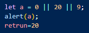
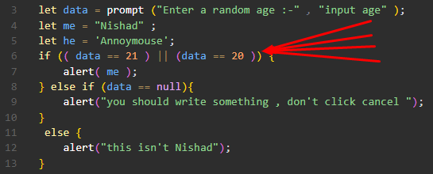
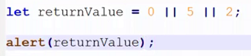
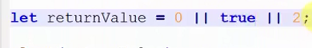

>>> || OR operator <<<
যেমন কোন ফোনের লক খোলার জন্য সাধারনত fingerprint ব্যেবহার করা হয় ।
কিন্তু যদি কোন কারনের fingerprint টা কাজ না করে তখন সে ফোনের লক খোলার জন্য ব্যেবহারকারি pin বা password ব্যাবহার করেতে পারবে ।
আর এর altenative একটা উপায় রাখার কাজটাই করা হয় OR operator এর সাহায্যে । if এর condition এর মদ্যেও এই একই কারনে or operator ব্যেবহার করা হয় ।
>>> Data store <<<
or operator সবসময় true এর খোঁজ করে ।
যেমনঃ-

retrun = 20
operand গুলু যদি boolean না হয় || operator সেটাকে boolean এ কনভার্ট করে ।
তারপরঃ-
সে true কে খুঁজতে থাকে । এবং যখন true পায় সে আর ডান অর্থাৎ সামনের দিকে না গিয়ে true এর value retrun করে দেয় ।
attention
or operator শুধু তখনি দেয়া হয় যখন কোন শর্ত অথবা বা থাকে শুধু মাত্র তখনি এই or operator ব্যেবহার করে হয় ।
যেমন ইউজার এর দেওয়া নির্দিষ্ট আকাধিক ডাটা যদি নিতে হয় তবে if এর একাধিক condition দেয়ার ক্ষেত্রে এই or operator ব্যেবহার করা হয় ।
এই or operator
if condition এ ব্যেবহার করার নিয়ম ঃ-

তির চিহ্ন দিয়ে মার্ক করা হয়েছে 6 নাম্বার লাইনে ।
অন্যান্য operator গুলার মত or operator ও তার operand কে boolean কনভার্ট করে ।
or operator তার condition operator দের থেকে যেকোনো একটাকে true পেলেই সেই (or operator ) true retrun করে ।
OR operator এর প্রত্যেকটা operand কে first bracket এর মধ্যে রাখতে হয় , এটা আন্তর্জাতিক standard ।
javascript বাম পাশ থেকে code evaluate করে এবং
( || OR ) সবসময় true কে খুঁজে ।
যেমন 6 নাম্বার লাইনে javascript প্রথমে বাম পাশের exprission কে evaluate করবে যদি বাম পাশের এ true পেয়ে যায় তবে সে আর ডান পাশে যাবে না true এর জন্য ।
সে কোড run করে দিবে ।
operand1 operand2 এর মধ্যে যেকোনো একটা true হলে
retrun = true ।
>> || OR use in Variable <<<
ex:-

result:-

result =5
এখানে প্রথমে or operator 0 কে boolean এ কনভার্ট করবে
এবং false পাবে ।
তারপর true এর আশায় সে 5 কে boolean এ কনভার্ট করবে । এবং সে true পাবে । তাই পরবর্তী operand 2 কে নিয়ে আর কাজ করবে না সে 5 retrun করে দিবে ।